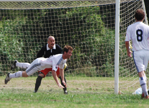
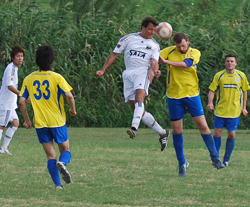

|
Misato, Saturday 5th September
Oh joy!! A new TML season arrives, players dust off their boots, referees don protective headgear, and everyone gets ready to start the season with gusto. Unfortunately, for Sala all of that gusto has gone already, after a shocking loss (perhaps the worst ever) to their bogey team, the Geckoes.
Cruising 2-0 at half-time, after a brace from the resurgent Shigeru Chino, with some silky passing and great movement on display, the fat lady was puckering up and the beers were on ice. That was before Sala did their old favourite trick of folding to a weaker team, and chucked the whole flipping match down the toilet.
Two scrappy goals and one clinical counter attack, orchestrated by Masa and finished by Andy Gill, were enough for the Geckoes to somehow snat ch victory from Sala in the last 20 minutes of the game. Hurrrrumph!

3-2 Geckoes.
Hopefully, this match will prove to be the nadir of Sala's heartache this season. If it isn't then I'm quitting and joining a cult.
Man of the Match - Shigeru C.
Sinner of the Match - Sala FC and all who sail in her!
Report by Scotty Thomson
|

 |